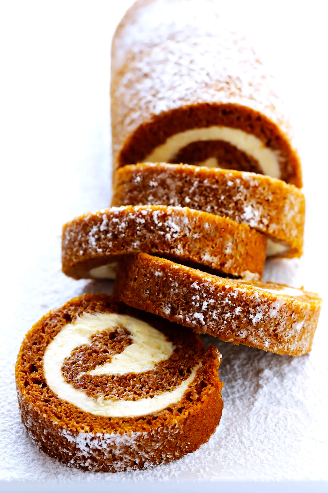

Hobbies and Interests:
PIANO
I have been playing piano since I was five years old. I like to play whenever I'm tired to release the stress.
See More
CODING
I first encountered computer science when I was in tenth grade when I took a college Python course.
See More

COOKING
I really loved watching cooking videos as a child and as I got older, I began actually following recipes.

DRAWING
As a kid, I doodled on any paper I could find. I've gotten it under control, but I still enjoy drawing.
See More